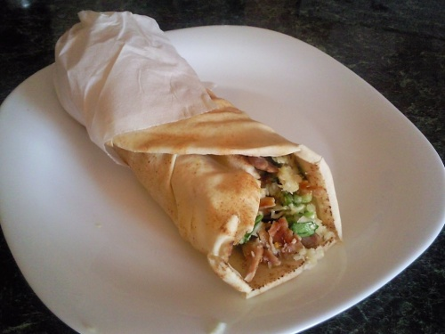

Shaorma

Shaorma, sau shawarma, este o mâncare arăbească din zona Levantului. Shaorma este o mâncare preparată din felii subțiri, prăjite, de carne peste care se pun legume proaspete, legume murate și un sos special, întreaga compoziție învelindu-se într-un rulou din clătită sau foaie de pită
Reteta
- Cateva lipii facute in casa
- Piept de pui
- Salata, castraveti, ceapa, rosii
- Ulei, sos de maioneza
- Putina sare
Mod de preparare
- Pieptul de pui se taie in fasii de diferite marimi, se adauga peste el sare, piper,curcuma, boia si se lasa la macerat cam 1 ora, apoi se pune la prajit(sau puteti sa il lasati intreg si il puteti pune la gratar si felia ulterior).
- Intr-un castron, se marunteste usturoiul se amesteca cu smantana, apoi se mai adauga sare si piper dupa gust. Cartofii se curata si se feliaza , apoi se pun la prajit
- Varza se toaca marunt, morcovul se da pe razatoare mica, ceapa se taie in rondele, rosiile si castravetii se feliaza rondele subtiri. Varza se amesteca cu morcovul.
- Dupa ce s-au prajit cartofii si pieptul de pui, se poate asambla shaorma.
Se ia foaia de lipie si se incalzeste putin la aragaz, pe focul dat mic, se unge lipia cu sosul de smantana cu usturoi, si se pune cate o patrime din ingrediente astfel: carne de pui, cartofi, ketchup,maioneza, urmate de varza cu morcov, ceapa rosiile si castravetii murati si putina carne de pui.
- Va sfatuim sa nu umpleti foarte tare lipia, astfel incat sa o puteti rula cu usurinta. Dupa ce ati strans-o bine se imbraca partea de jos a lipiei cu o punga alimentara si apoi se ridica punga incat sa fie stransa in jurul lipiei. Se procedeaza la fel cu celelalte 3 lipii ramase.
- Shaorma e gata. Pofta buna!